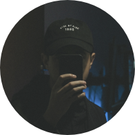

MIM

Meu nome é Josemar dos Santos Trindade chamado por colegas e amigos de Weet, nascido na cidade do Rio de Janeiro em 1 de Junho de 1992, atualmente moro na cidade do Rio de Janeiro. Sou formado em web design / design gráfico na Universidade Castelo Branco/RJ. Trabalho com web design, design gráfico, html/css, fotomanipulação e ilustração. Tenho experiência em trabalhos offlines, desde embalagens e PDV, criação de identidades visuais, peças de divulgação e design editorial. Também tenho contato com a parte online, trabalhando com a confecção e customização de layouts. Busco sempre aprender e estar aberto a novas experiências, tentando aplicar meus conhecimentos em todos os projetos que me envolvo, sendo eles pessoais ou profissionais. Gosto muito do que faço e deixo meu portfólio de portas abertas para conhecerem meu trabalho. Sou apaixonado por tecnologia, cores, idéias, música, filmes e séries.
HTML5 / CSS3
UX / UI Designer
Blogspot / WordPress
Fotografia / Manipulação